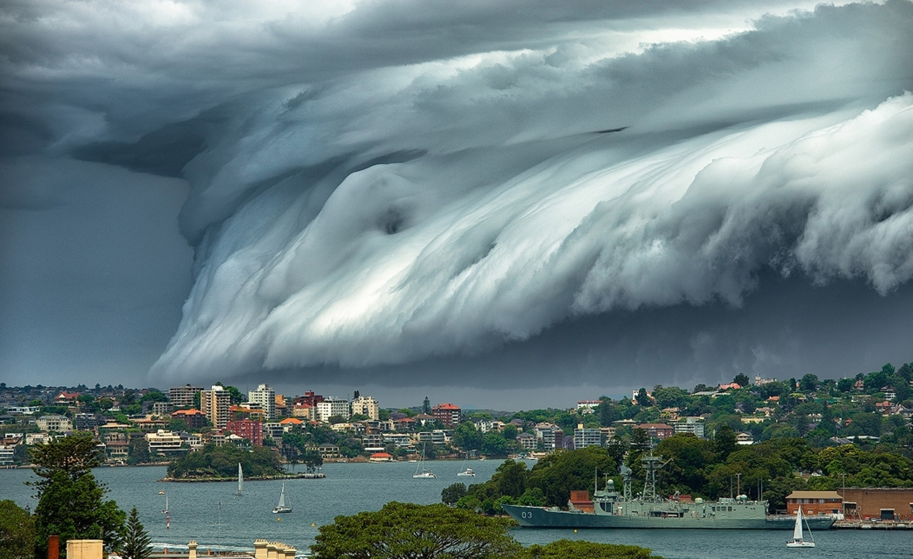

Таяние арктических льдов, повышение уровня моря, отступление ледников: глобальное потепление привело к десятилетиям сокращения и истончения арктического морского льда. Сейчас он находится в опасном положении и уязвим для атмосферных аномалий. Прогнозы сокращения арктического морского льда отличаются друг от друга. Последние прогнозы предполагают, что Арктика может быть свободной ото льда (определяется как протяжённость льда менее 1 миллиона км²) в летний период уже в 2025—2030 годах. По оценкам, повышение уровня моря с 1993 года составляло в среднем от 2,6 мм до 2,9 мм в год ± 0,4 мм. Кроме того, повышение уровня моря ускорилось за период наблюдений с 1995 по 2015 год. Сценарий МГЭИК с высоким уровнем эмиссии предполагает, что в течение XXI века уровень моря в среднем может вырасти на 52-98 см.
Природные катаклизмы: повышение глобальной температуры приведёт к изменениям в количестве и распределении атмосферных осадков. Атмосфера становится более влажной, выпадает больше дождей в высоких и низких широтах, и меньше — в тропических и субтропических регионах. В результате могут участиться наводнения, засухи, ураганы и другие экстремальные погодные явления. Потепление должно, по всей вероятности, увеличивать частоту и масштаб таких событий. По мнению одних исследователей, увеличение температуры морской воды может приводить к увеличению энергии ураганов, по мнению других — «эмпирические данные не указывают на увеличение частоты формирования более мощных циклонов».
Чтобы решить проблемы глобального потепления надо:
1.Поиск альтернативных источников энергии.
2.Уменьшение выбросов CO2, совершенствуя существующее производство и транспорт.
3.Посадка деревьев.
4.Отбор углекислого газа из атмосферы и закачка в подземные пласты Земли.
Всем надо знать где можно сдать мусор для переработки вот я ипредлагаю на неё посмотреть